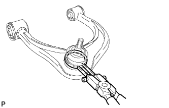
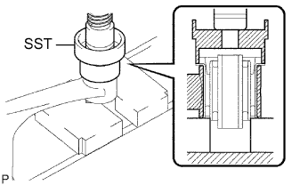

FRONT UPPER SUSPENSION ARM > REASSEMBLY |
| 1. INSTALL FRONT UPPER BALL JOINT DUST COVER LH |
Pack the upper arm ball joint with MP grease.
| *1 | MP Grease |
Apply MP grease to the locations shown in the illustration.
Install the dust cover to the upper arm.
|  |
Using a snap ring expander, install the dust cover set ring.
| 2. INSTALL FRONT SUSPENSION UPPER ARM BUSH LH |
|  |
Using SST and a press, press in a new bush.